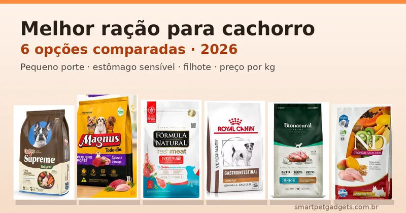
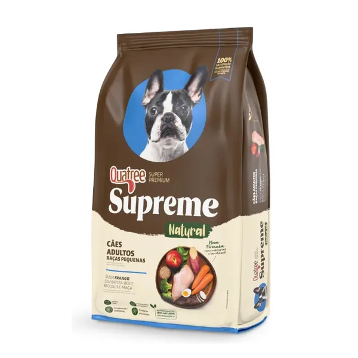
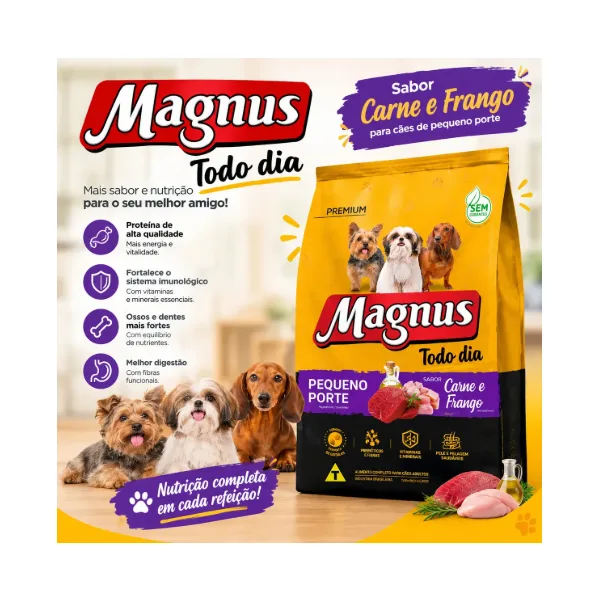
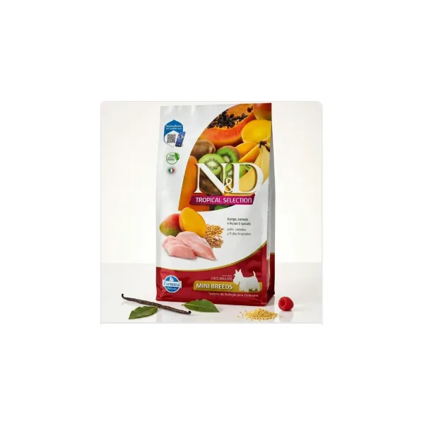
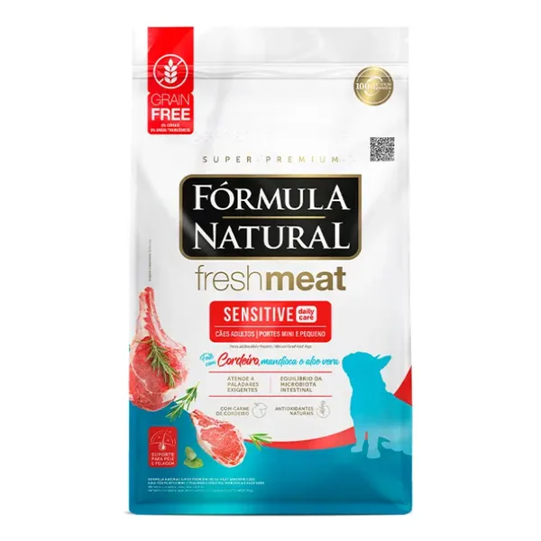
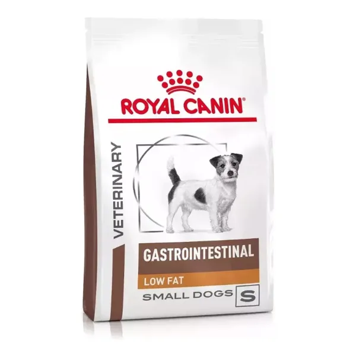
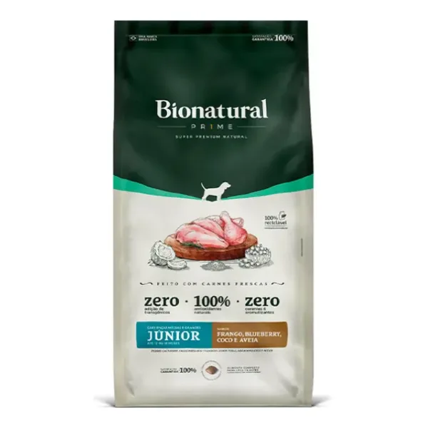

Qual é a melhor ração para cachorro? Para a maioria dos cães adultos de pequeno porte, a Quatree Supreme Raças Pequenas entrega composição super premium por cerca de R$ 13 o quilo, com nota 4,9 em mais de 4.200 avaliações. Mas a escolha certa muda conforme o cão: comparamos 6 rações vendidas no Mercado Livre (econômica, super premium, sem grãos, terapêutica e para filhote) pela proteína, pelos ingredientes e pelo preço por kg, não pela promoção do dia.
Quer ir direto aos produtos? Veja a tabela com preço por kg e o link de cada ração.
Ver as rações recomendadas ↓Resposta direta: qual escolher
- Melhor custo-benefício (cão adulto pequeno): Quatree Supreme. Super premium, sem transgênicos, com pré e probióticos e ação contra tártaro, a cerca de R$ 13/kg.
- Mais barata por kg: Magnus Todo Dia Pequeno Porte, cerca de R$ 8,50/kg. É premium (não super premium), boa para quem precisa economizar.
- Mais proteína animal: N&D Tropical Selection Adult Mini. Tem 26% de proteína bruta, cerca de 90% dela de fontes animais, e é sem corantes e sem transgênicos.
- Cão sensível ou com paladar exigente: Fórmula Natural Fresh Meat Sensitive. Leva cordeiro como proteína principal, é grain free e vem em 20 sacos de 505 g.
- Pancreatite ou gordura alta no sangue: Royal Canin Gastrointestinal Low Fat. É dieta terapêutica e só deve ser usada com indicação do veterinário.
- Filhote de porte médio ou grande: Bionatural Prime Júnior, feita com carne fresca, glicosamina e condroitina, a cerca de R$ 14,60/kg.
| Ração | Categoria | Indicação | Proteína principal | Pacote | Preço | R$/kg | Nota ML |
|---|---|---|---|---|---|---|---|
| Quatree Supreme | Super premium | Adulto, raças pequenas | Frango (vísceras mín. 25%) | 10 kg | R$ 131,65 | ~13,17 | 4,9★ (4.246) |
| Magnus Todo Dia | Premium | Adulto, pequeno porte | Carne e frango | 15 kg | R$ 127,90 | ~8,53 | 4,9★ (1.893) |
| N&D Tropical Selection | Super premium | Adulto, raças mini | Frango (26% PB) | 12 kg | R$ 369,90 | ~30,83 | 5,0★ (15) |
| Fórmula Natural Fresh Meat Sensitive | Super premium, grain free | Adulto mini e pequeno, sensível | Cordeiro (26% PB) | 10 kg | R$ 388,33 | ~38,83 | 5,0★ (619) |
| Royal Canin Gastrointestinal Low Fat | Terapêutica (veterinária) | Adulto pequeno, com indicação | Vísceras de aves (20% PB) | 1,5 kg | R$ 99,50 | ~66,33 | 4,9★ (2.615) |
| Bionatural Prime Júnior | Super premium natural | Filhote, raças médias e grandes | Frango e fígado frescos | 15 kg | R$ 218,49 | ~14,57 | 4,9★ (125) |
Preços (à vista/Pix), notas e número de avaliações consultados no Mercado Livre em 08/11/2026, em plena temporada de Black Friday, e sujeitos a alteração. PB = proteína bruta. Confira o valor atual na página do produto antes de comprar.
O preço do saco engana porque os pacotes vão de 1,5 kg a 15 kg. Dividindo pelo peso, a diferença entre a mais barata e a mais cara desta lista passa de 7 vezes:
*Dieta terapêutica em pacote de 1,5 kg. Não compare diretamente com rações de manutenção.
Nesta página

Super premium com farinha de vísceras de frango (mín. 25%) como primeiro ingrediente, batata-doce, brócolis, beterraba e maçã. O diferencial está nos aditivos que normalmente só aparecem em rações bem mais caras: hexametafosfato de sódio (reduz a formação de tártaro), prebióticos MOS e FOS, probióticos (Bifidobacterium lactis e Lactobacillus acidophilus), glicosamina e condroitina para as articulações e ômegas 3 e 6 com EPA e DHA. É livre de transgênicos e usa só antioxidantes naturais (alecrim, tocoferol e chá verde).
No resumo das avaliações, os compradores destacam melhora na pelagem, boa digestão e boa aceitação por Shih Tzu e Yorkshire.
R$ 131,65 no Pix (39% off) · ⭐ 4,9 · 4.246 avaliações · +10 mil vendidos

Ração premium (um degrau abaixo das super premium) completa para cães adultos de pequeno porte, sabor carne e frango. A embalagem destaca proteína de alta qualidade, fibras para a digestão, vitaminas e minerais para imunidade, ossos e dentes. É a opção desta lista para quem alimenta mais de um cão ou precisa de um preço baixo: sai por cerca de R$ 8,50 o quilo.
No resumo das avaliações, os tutores destacam o custo-benefício, a boa aceitação e fezes sem odor forte.
R$ 127,90 (5% off) · ⭐ 4,9 · 1.893 avaliações · +10 mil vendidos

Ração italiana com 26% de proteína bruta, cerca de 90% vinda de fontes animais. Usa cereais selecionados (aveia, sorgo e cevada) e frutas tropicais desidratadas (banana, mamão, kiwi e manga), além de ômegas 3 e 6, DHA, EPA, FOS e MOS. Não tem corantes, aromas artificiais nem transgênicos. O croquete tem cerca de 9 a 11 mm de diâmetro, tamanho adequado para boca pequena. O pacote vem como 10 kg + 2 kg.
Atenção: não é grain free, apesar de ser confundida com a linha Ancestral Grain da marca.
R$ 369,90 (7% off) · ⭐ 5,0 · 15 avaliações · +100 vendidos

Super premium grain free para cães adultos mini e pequeno com pele sensível ou seletividade alimentar. Tem 15% de carne e miúdos de ovino frescos, mandioca (20%) e batata-doce no lugar dos cereais, além de aloe vera, colágeno, glicosamina, condroitina e ômega 3 de microalgas. Os níveis de garantia trazem 26% de proteína bruta, 15% de extrato etéreo e 3.830 kcal/kg de energia metabolizável.
Um detalhe que pesa para cão pequeno: compradores relatam que o pacote de 10,1 kg vem dividido em 20 sacos lacrados de 505 g, o que mantém a ração fresca até o fim.
R$ 388,33 no Pix (38% off) · ⭐ 5,0 · 619 avaliações · +1.000 vendidos

Alimento coadjuvante da linha Veterinary para cães adultos de pequeno porte, formulado para ajudar na regulação do metabolismo da gordura em casos de hiperlipidemia e em quadros gastrointestinais. Tem baixo teor de gordura, 20% de proteína, ingredientes de alta digestibilidade, casca de psyllium e prebióticos. O fabricante recomenda orientação veterinária antes de iniciar ou prolongar o uso.
No resumo das avaliações, os tutores citam digestão melhor, estômago menos estufado e melhora em cães com pancreatite (sempre sob acompanhamento).
R$ 99,50 · ⭐ 4,9 · 2.615 avaliações · +10 mil vendidos
⚠️ Ração terapêutica não é ração "melhor": a Royal Canin Gastrointestinal Low Fat tem menos gordura e menos proteína de propósito, para tratar uma condição específica. Dar para um cão saudável sem indicação não traz benefício e pode deixar faltar energia. Se o seu cão tem vômitos, diarreia frequente ou diagnóstico de pancreatite, quem define a dieta é o veterinário.

Super premium natural elaborada por veterinários para filhotes de porte médio e grande. Leva carne fresca de frango e fígado, aveia, blueberry, coco, banana e maçã, além de ômega 3 de óleo de peixe e microalgas, probióticos (B. lactis e L. rhamnosus), glicosamina e condroitina, importantes para as articulações de cães que crescem rápido. É sem transgênicos, sem corantes e sem aromatizantes.
No resumo das avaliações, os tutores elogiam a melhora na pelagem e nos dentes, a boa aceitação e a redução do volume e do odor das fezes. Também existe em pacote de 2,5 kg.
R$ 218,49 (34% off) · ⭐ 4,9 · 125 avaliações · +500 vendidos
Preços, notas e avaliações consultados no Mercado Livre em 08/11/2026 e podem variar. As informações de composição vêm da descrição oficial de cada anúncio e da embalagem.
Quatree Supreme — Prós
Quatree Supreme — Contras
Magnus Todo Dia — Prós
Magnus Todo Dia — Contras
N&D Tropical — Prós
N&D Tropical — Contras
Fresh Meat Sensitive — Prós
Fresh Meat Sensitive — Contras
Royal Canin GI Low Fat — Prós
Royal Canin GI Low Fat — Contras
Bionatural Prime Júnior — Prós
Bionatural Prime Júnior — Contras
A indústria divide as rações em standard, premium, premium especial e super premium, mas essa classificação não segue uma norma oficial: cada marca define a própria. Na prática, as super premium costumam ter:
Comparando a Magnus Todo Dia (premium, ~R$ 8,50/kg) com a Quatree Supreme (super premium, ~R$ 13/kg), a diferença é de cerca de R$ 4,60 por quilo. Para um cão pequeno, isso dá poucos reais por mês, e por isso a super premium de entrada costuma compensar. Em casas com vários cães grandes, a conta muda.
Cães pequenos (até cerca de 10 kg) têm metabolismo mais acelerado, gastam mais energia por quilo de peso corporal e acumulam tártaro com mais facilidade. Por isso:
A troca brusca é a principal causa de fezes moles depois de mudar de ração. Faça a transição em cerca de 7 dias:
| Dias | Ração antiga | Ração nova |
|---|---|---|
| 1 e 2 | 75% | 25% |
| 3 e 4 | 50% | 50% |
| 5 e 6 | 25% | 75% |
| 7 em diante | 0% | 100% |
Mantenha água fresca sempre disponível. Se houver diarreia persistente, vômito ou recusa total, volte uma etapa e procure o veterinário.
Entre as seis comparadas, a Quatree Supreme Raças Pequenas tem o melhor equilíbrio entre composição super premium e preço (cerca de R$ 13 por kg), com nota 4,9 em mais de 4 mil avaliações no Mercado Livre. Para quem pode gastar mais e quer mais proteína animal, a N&D Tropical Selection Adult Mini é a opção mais completa. Para orçamento apertado, a Magnus Todo Dia Pequeno Porte custa cerca de R$ 8,50 por kg.
A classificação (standard, premium, premium especial e super premium) é feita pela própria indústria e não segue uma norma oficial. Na prática, rações super premium costumam usar mais proteína de origem animal, ingredientes de maior digestibilidade e não usar corantes, o que tende a gerar fezes menores e menos odor. Rações premium, como a Magnus Todo Dia, são completas e mais baratas, mas com menos aditivos funcionais. Compare sempre a lista de ingredientes e os níveis de garantia, não só o selo.
Para sensibilidade leve (fezes moles, paladar exigente, coceira), uma ração com proteína única e sem cereais, como a Fórmula Natural Fresh Meat Sensitive de cordeiro, é um bom ponto de partida. Para problemas diagnosticados, como pancreatite ou hiperlipidemia, existem dietas terapêuticas como a Royal Canin Gastrointestinal Low Fat, que devem ser usadas com orientação do veterinário.
Não necessariamente. Grain free (sem grãos) ajuda cães com sensibilidade comprovada a algum cereal, mas não é superior para todos os cães. A N&D Tropical Selection, por exemplo, usa aveia, sorgo e cevada e tem 26% de proteína bruta, com cerca de 90% dela de origem animal. O que mais pesa é a qualidade da proteína e a adequação ao porte e à fase de vida.
Não é o ideal. Filhotes precisam de mais energia, proteína, cálcio e fósforo em proporções específicas para o crescimento. Em raças médias e grandes, o equilíbrio de cálcio e fósforo é ainda mais importante para o desenvolvimento das articulações, por isso existem linhas como a Bionatural Prime Júnior Raças Médias e Grandes. Use a ração de filhote até a idade indicada na embalagem e faça a troca para adulto de forma gradual.
Faça a transição em cerca de 7 dias: nos dias 1 e 2, 25% da ração nova e 75% da antiga; nos dias 3 e 4, metade de cada; nos dias 5 e 6, 75% da nova; e a partir do dia 7, só a nova. Se aparecer diarreia persistente, vômito ou recusa total, volte uma etapa e consulte o veterinário.
O pacote grande reduz o preço por kg, mas um cão de 5 kg pode levar 3 a 4 meses para terminar 15 kg, e a ração aberta perde aroma e oxida com o tempo. Se escolher o saco grande, guarde em pote hermético, longe de calor e umidade. Algumas marcas, como a Fórmula Natural Fresh Meat, vendem o pacote de 10,1 kg fracionado em sacos menores lacrados, o que resolve esse problema.
Depende da ração, do peso, da idade e do nível de atividade do cão. Cada fabricante traz uma tabela de quantidade diária na embalagem, porque rações com mais energia por kg exigem porções menores. Use a tabela como ponto de partida, divida em duas ou mais refeições e ajuste conforme o cão ganha ou perde peso. Um comedouro automático com porções programadas ajuda a manter a quantidade exata.
Não existe uma melhor ração para todos os cães, existe a mais adequada ao porte, à idade e à saúde do seu. Para o cão adulto pequeno típico, a Quatree Supreme é a escolha mais equilibrada desta lista. Se o orçamento é o limite, a Magnus Todo Dia resolve com o menor custo por quilo. Para mais proteína animal, vá de N&D Tropical Selection, e para cães sensíveis ou exigentes, de Fórmula Natural Fresh Meat Sensitive. Filhotes de porte médio e grande ficam bem servidos com a Bionatural Prime Júnior. A Royal Canin Gastrointestinal Low Fat é só para quando o veterinário indicar. Qualquer que seja a escolha, faça a troca de forma gradual.
Informações de composição, níveis de garantia e indicação consultadas nas descrições oficiais dos anúncios e nas embalagens (Granvita/Quatree, Adimax/Magnus, Farmina/N&D, Fórmula Natural, Royal Canin e Bionatural). Este conteúdo não substitui orientação veterinária. Veja nossa política editorial.
🐾 Confira preços e disponibilidade atual no Mercado Livre.
Links de afiliado: podemos receber uma comissão por compras feitas através destes links, sem custo adicional para você.
Nildo Alves — curadoria de produtos pet no Smart Pet Gadgets. Pesquisa e compara produtos para cães e gatos, cruzando especificações de fabricante com boas práticas veterinárias e dados de mercado.
Sobre o Smart Pet Gadgets · Contato · Política editorial e de afiliados